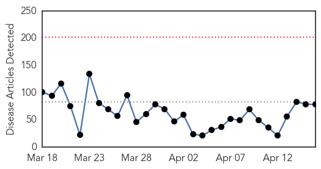
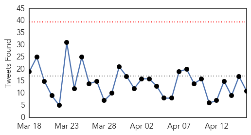

Dengue Fever
30-Day Web Trend
1 alerts, 0 warnings

30-Day Twitter Trend
0 alerts, 0 warnings

Article Locations

Article Confidences

Top Articles:
- 0.998
- Maldives hit by dengue fever in global epidemic
- 0.994
- News reader
- 0.994
- Science, Technology and Medicine News Updates From Asia
- 0.973
- Mosquitoes from South-East Asia carrying diseases discovered at Australian airports
- 0.947
- City Health Department encourages public to take precautions against mosquitoes
Top Tweets:
-
No tweets found for Apr 16, 2015
Ebola
30-Day Web Trend
0 alerts, 0 warnings

30-Day Twitter Trend
0 alerts, 0 warnings

Article Locations
Article Confidences
Top Articles:
- 1.000
- As Ebola outbreak calms down, U must wait to test vaccines
- 1.000
- As Ebola outbreak calms down, U must wait to test vaccines
- 1.000
- As Ebola Retreats, Obama Urges Vigilance and Preparation in West Africa
- 0.999
- CDC Says Fight Against Ebola is Far From Over
- 0.999
- WHO Warns Ebola Survivors on 'Safe Sex’
- 0.999
- Ebola Researchers Take New Look at Risk of Sexual Transmission
- 0.999
- Heads of Ebola-hit nations meet Obama
- 0.998
- CDC Advises Cruise Industry on Handling Ebola
- 0.998
- As Ebola retreats, Obama urges vigilance and preparation in West Africa
- 0.997
- On Ebola Response and Recovery, World Bank and Partners Keep Pressure On
- 0.997
- Local volunteers send care package to Liberia in wake of Ebola outbreak
- 0.997
- Guinea finds nine new Ebola cases near border with Sierra Leone
- 0.997
- Guinea finds nine new Ebola cases
- 0.997
- Obama Meets with African Leaders to Assess Progress against Ebola
- 0.997
- Guinea finds 9 new Ebola cases near border with Sierra Leone
- 0.997
- Ebola-hit African countries move into early recovery after "dramatic progress": WHO chief - Xinhua
- 0.996
- Sierra Leone President Bemoans Ebola's Impact
- 0.996
- US CDC starts trial of Canadian Ebola vaccine
- 0.995
- Ebola-hit Liberia rebuilds devastated child healthcare system
- 0.995
- The Battle Against Ebola in Liberia: Young People Played a Game-changing Role
- 0.994
- Africans worst responders in Ebola crisis
- 0.994
- Ebola Still a Danger
- 0.994
- Carter discusses response to Ebola in African countries
- 0.993
- Strange disease ravages Ondo community; 28 dead
- 0.993
- Obama: Ebola Still a Danger
- 0.993
- Ebola Outbreak 2015 News Update: Traces of Ebola Found in Survivor's Semen, W.H.O. Urges More Caution
- 0.992
- Mysterious Disease Claims Lives of 14 in Small Nigerian Town
- 0.990
- Ebola on the wane, Sierra Leone braces for a whole new crisis
- 0.990
- ‘Dramatic’ progress in fighting Ebola must be followed by long-term recovery efforts
- 0.988
- Sierra Leone goes back to school
- 0.981
- Health authorities report 1 confirmed Ebola case in Liberia, previously declared Ebola free
- 0.981
- SA healthcare team ends Sierra Leone quarantine
- 0.980
- Ebola Fighters Say Now is Not the Time to Let Up
- 0.980
- Turning the Page on Ebola – Jewish Business News
- 0.969
- Turning the Page on Ebola by Alpha Condé , Ernest Bai Koroma and Ellen Johnson Sirleaf
- 0.967
- In the news
- 0.965
- New Jersey spent $3M on Ebola monitoring
- 0.960
- Strange Disease Kills 12 Persons in Ondo, Articles
- 0.956
- SA health workers return from Ebola-hit Sierra Leone
- 0.947
- WB urged to lead fund-raising efforts for Ebola-hit countries
- 0.946
- Sahara Reporters
- 0.946
- Ebola in semen six months after man’s recovery
- 0.944
- As Liberia, Sierra Leone Bounce Back, Women And Youth Still Struggle
- 0.944
- UNMEER assists a densely populated Freetown community to fend off Ebola - Sierra Leone
- 0.943
- 12 Persons Died Of Strange Disease In Ondo
- 0.941
- Pregnant girls in Sierra Leone not allowed back to school due to 'bad moral example'
- 0.941
- Ministry hosting training on public health threats
- 0.935
- NERC boss ends tour of Ebola hot spots
- 0.932
- Traditional Leaders honor Global Communities head for fight against Ebola
- 0.926
- Battling Ebola: How Tours into Guinea’s Hot Zone are Helping in the Fight
Showing top 50 articles...
Top Tweets:
- 0.798
- From The WHO: Preventing The Next Ebola - Health Affairs (blog) http://t.co/duNDhqdE1f ebola EVD
- 0.788
- Panel talks Ebola outbreak origins - Daily Aztec http://t.co/uwu6XcK5eu ebola EVD
- 0.780
- Join Dr of Ebola Alert at the International Journalism Festival by 3pm (WAT) today as they discuss 'Ebola: beyond reporting'.
- 0.777
- Services for Mothers and Newborns During the Ebola Outbreak in Liberia: The Need for Improvement... http://t.co/lFvw8kaI3f Ebola
- 0.727
- Avoiding Ebola – how this Chiefdom in Sierra Leone did it - UNICEF Connect (blog) http://t.co/ncmfx75XhT ebola EVD
- 0.706
- Ebola-hit Liberia rebuilds devastated child healthcare system - Yahoo News http://t.co/cE7Ju07YbW ebola EVD
- 0.704
- Brain tumors may be new victims of Ebola-like virus - Yale News http://t.co/qyMGqdzGpj ebola EVD
- 0.690
- As Ebola outbreak calms down University of Minnesota must wait to test vaccines - Minneapolis Sta... http://t.co/0yIUvms3nV ebola EVD
- 0.664
- To prevent the next Ebola scientists try to catch new viruses before they ... - PRI http://t.co/1lBhKp1RzU ebola EVD
- 0.591
- Fort Hood soldier's death linked to 'spice' not Ebola - Military Times http://t.co/GldsJrY7et ebola EVD
- 0.530
- New Jersey spent $3M on Ebola monitoring - The Hill http://t.co/SZBUVqDmx4 ebola EVD